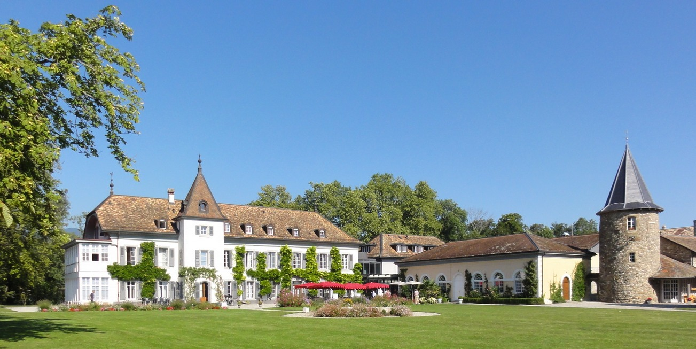
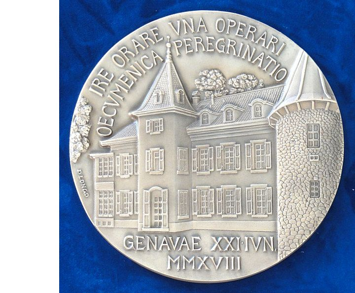

Das Château de Bossey, in der Nähe von Nyon inmitten von Feldern und Wäldern gelegen, hat eine weltweite Ausstrahlung, ist in der Region selbst allerdings wenig bekannt. Der Buschauffeur jedenfalls, der den Besucher ins Nachbardorf fährt, hat noch nie etwas davon gehört. Hingegen beehrte Papst Franziskus die darin untergebrachte Institution auf seiner eintägigen Stippvisite in die Schweiz 2018 mit einem mehrstündigen Besuch. Doch mehr dazu später.
Ökumene in Theorie und Praxis
Das Schlösschen aus dem 18. Jahrhundert mit diversen älteren und neueren Annexbauten beherbergt seit 1946 das Ökumenische Institut Bossey, das internationale Studien-, Dialog- und Tagungszentrum des Ökumenischen Rats der Kirchen mit Sitz in Genf. Seit 1952 ist das Ökumenische Institut an die autonome Fakultät für protestantische Theologie der Universität Genf angebunden und bietet heute als Post-Graduate-School verschiedene englischsprachige Nachdiplomprogramme in ökumenischer Theologie und interreligiösen Studien an. Die jeweils zwei bis drei Dutzend Studierenden aus aller Welt und unterschiedlichsten Denominationen wohnen in der Regel vor Ort und verleihen dem Ökumenischen Institut ein kosmopolitisches, multikonfessionelles Flair. Eine wichtige Rolle spielt die 1951 eingerichtete Kapelle im ehemaligen Kelterhaus direkt neben dem mittelalterlichen Turm: Dort wird Ökumene nicht allein theologisch-wissenschaftlich reflektiert, sondern im täglichen gemeinsamen Gottesdienst auch ganz praktisch erprobt und gelebt.
Das Château de Bossey, rechts der mittelalterliche Turm mit angrenzender Kapelle (am rechten Bildrand). (Bild: David Zimmer, September 2019)
Prägende Persönlichkeiten
Als ideeller Vater des Ökumenischen Instituts gilt der reformierte Schweizer Theologe Adolf Keller (1872–1963), eine treibende Kraft der ökumenischen Bewegung, der in den 1930er Jahren in Genf erstmals ökumenische Sommerkurse mit renommierten Dozenten (Emil Brunner, Karl Barth, Paul Tillich u.a.) und internationaler Beteiligung organisierte; eigentlicher Initiant des Ökumenischen Instituts Bossey war der reformierte niederländische Theologe Willem A. Visser 't Hooft (1900–1985), Generalsekretär des formell erst 1948 gegründeten Ökumenischen Rats der Kirchen. Die Eröffnung des Instituts fand im Oktober 1946 durch Gründungsdirektor Hendrik Kraemer (1888–1965) statt; dieser musste anschliessend jedoch für längere Zeit in die Niederlande zurückkehren, weshalb die ersten Jahre des Lehrbetriebs massgeblich durch die zweite Person im Leitungsteam mitgeprägt wurden: die protestantische Elsässer Theologin Suzanne de Dietrich (1891–1981), eine Aktivistin der ökumenischen Jugendbewegung und Schlüsselfigur der «biblischen Erneuerung» Mitte des 20. Jahrhunderts.
Von der Philanthropie zur langfristigen Finanzierung
Dank namhafter Spenden von Mäzenen wie John D. Rockefeller Jr. konnten im Laufe der Jahre das Grundstück, das Schloss (das einst kurzzeitig Madame de Staël gehört hatte), diverse Annexgebäude und das nahegelegene Landgut Petit-Bossey gekauft und für die Bedürfnisse des Lehr- und Internatsbetriebs umgebaut werden. 1962 kam ein Neubau mit zeitgemässen Konferenz- und Unterrichtsräumen sowie einer Bibliothek dazu (heute die Bibliothek des Ökumenischen Rats der Kirchen mit rund 100'000 Bänden). Seit 2002 kann das Château de Bossey auch von Externen als Konferenz- und Tagungszentrum genutzt werden. Es stehen 90 Hotelzimmer sowie ein Restaurant zur Verfügung. Die Finanzierung des Ökumenischen Instituts mit seinem akademischen Lehrbetrieb und gegenwärtig sieben Dozierenden (Aufwand 2018 ca. CHF 1.5 Mio.) und die Alimentierung des Stipendienfonds für die fast ausschliesslich ausländischen Studierenden erfolgt durch den Ökumenischen Rat der Kirchen und zahlreiche Kirchen weltweit, darunter auch die Mitglieder des Schweizerischen Evangelischen Kirchenbunds mit jährlichen Kirchenkollekten.
«Avantgarde der ökumenischen Bewegung»
Für die im Ökumenischen Rat der Kirchen (ÖRK) zusammengeschlossenen Kirchen bildet Bossey als Studien- und Begegnungsort «einen sehr wichtigen Bezugspunkt», wie der Schweizerische Evangelische Kirchenbund hervorhebt. Sowohl im Lehrkörper als auch unter den Studierenden sind freilich nicht nur Protestanten, sondern seit jeher auch viele Orthodoxe und in neuerer Zeit auch zahlreiche Katholiken vertreten. So beispielsweise war Daniel Ciobotea, seit 2007 Patriarch der rumänisch-orthodoxen Kirche, in den 1980er Jahren zunächst als Dozent und anschliessend als stellvertretender Direktor in Bossey tätig. Der gegenwärtige Direktor, Ioan Sauca, ist ebenfalls orthodoxer Konfession und rumänischer Herkunft. Dekan ist derzeit der aus Nigeria stammende römisch-katholische Theologe Lawrence Iwuamadi – was bemerkenswert ist, da die katholische Kirche bekanntlich nicht Mitglied des ÖRK ist. Wohl aber arbeitet sie seit 1965 in einer ständigen gemeinsamen Arbeitsgruppe mit dem ÖRK zusammen, ist Vollmitglied in dessen Kommission für Glauben und Kirchenverfassung und ernennt seit langem jeweils ein katholisches Mitglied im Lehrkörper des Ökumenischen Instituts Bossey. Umgekehrt reisen die Studierenden des Ökumenischen Instituts jedes Jahr nach Rom, wo sie mit Vertretern des Päpstlichen Rats zur Förderung der Einheit der Christen zusammentreffen.
Bei seinem Kurzbesuch in der Schweiz aus Anlass des 70-Jahr-Jubiläums des ÖRK, der unter dem Motto «Gemeinsam gehen, beten und arbeiten» stand, legte Papst Franziskus am 21. Juni 2018 einen längeren Halt im Château de Bossey ein und unterstrich damit die grosse Bedeutung des Ökumenischen Instituts auch für den Vatikan. Die bestehenden institutionellen Beziehungen sollen in Zukunft noch weiter ausgebaut werden.
Päpstliche Medaille aus Anlass des Besuchs von Papst Franziskus am 21. Juni 2018 in Genf, mit der Fassade des Château de Bossey, aufgehängt in dessen Lobby. (Bild: David Zimmer, September 2019)
David Zimmer ist Alumnus der Universität Freiburg i.Ü.
Weitere Artikel von {{author.author}} finden Sie hier:
- {{author.location[i]}}: {{author.fulltitle[i]}} {{beitrag}}
Zur Vertiefung:
- Ein normales Listenelement
- Ökumenischer Rat der Kirchen: Das Ökumenische Institut Bossey
- Website des Hotels und Tagungszentrums Château de Bossey
- Ekué, Amélé Adamavi-Aho: "Gemeinsam verschieden sein: Wahrnehmungen zum interkulturell-theologischen Lernen am Ökumenischen Institut Bossey", in: Ökumenische Rundschau 67 (2018), Nr. 2, S. 177–205.
- Heller, Dagmar: "Das Ökumenische Institut Bossey als Erbe Adolf Kellers", in: Hirzel, Martin Ernst, Martin Wallraff (Hg.), Ökumene in Wahrheit und Liebe: Beiträge zu Werk und Leben des Schweizer Theologen Adolf Keller (1872-1963), Zürich: Theologischer Verlag Zürich 2016, S. 103–113.
- Weber, Hans-Ruedi: A laboratory for ecumenical life: the story of Bossey, 1946–1996, Geneva: WCC Publications 1996.
- Williams, Peter: The Bossey experience: the Ecumenical Institute of the World Council of Churches [11-minütiger Videofilm], 2014.